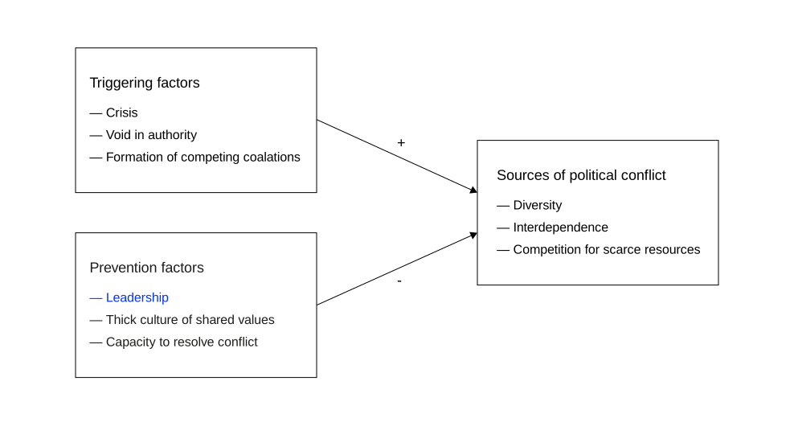
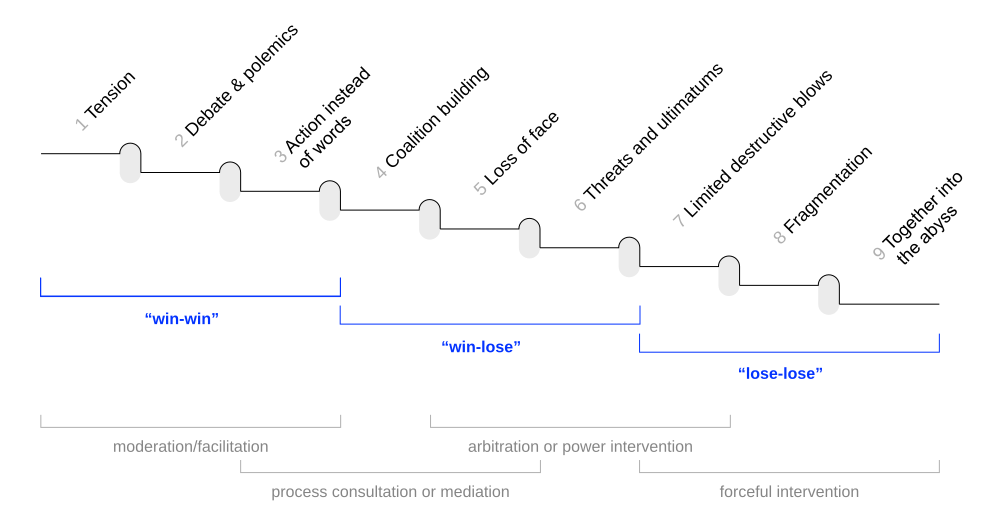

Conflict & Power
How do leaders exercise influence and manage conflict?
Learning Objectives
After completing this unit, you will be able to:
- Explain why power and politics are inherent to organizational life and distinguish functional from dysfunctional politics.
- Identify personal and positional sources of power and assess their relevance in different leadership situations.
- Apply the Thomas-Kilmann conflict styles to diagnose and respond to organizational conflicts.
- Describe lateral leadership strategies for influencing without formal authority.
A Conflict Scenario
A product manager wants to redirect engineering resources to a new customer-facing initiative. The engineering lead disagrees as her team is already stretched thin maintaining critical infrastructure. Both escalate to the VP, who needs both of them to succeed.
- How should this be resolved?
- What role does power play?
This scenario illustrates the everyday reality of organizational life: interdependence creates competing demands, and formal authority alone cannot resolve them. The VP cannot simply “decide”; she needs both leaders aligned and committed. This requires understanding power dynamics, conflict resolution, and political navigation.
In this unit, we explore how leaders exercise influence and manage the inevitable conflicts that arise in complex organizations.
On Power and Politics
Power in Organizations
Organizations can be seen as both, cooperative systems of employees working together to achieve goals and political arenas of individuals and groups with differing interests (Brass, 2017).
Power can be defined as the ability to get other people to do what you want them to do, politics as power in action, using a range of techniques and tactics (Buchanan & Badham, 2020).
Power and politics is at the heart of how organizations function (Hill, 2003).
Managers have to understand and develop new sources of power and influence if they are going to be able to defend their groups’ interests. Thus, they must become “political”, i.e., understand the political dynamics of organizations and build the power and influence necessary to navigate them. Hill (2003), p. 272
Though, often associated with negative connotations, Buchanan & Badham (2020) shows that the view of the damaging, negative consequences of politics is too narrow. Politics can be both ‘functional’ and ‘dysfunctional’.
Power and Leadership
Other things being equal, political conflict increases with growing interdependence, diversity, and resource scarcity (Pfeffer, 1992).
Managers who ignore or fail to understand how power and influence work in organizations will find that they and their teams experience difficulty in being effective and ethical in their work. Hill (2003, p. 273)
Development of competing coalitions and periods of organizational crisis1 exacerbate political conflict, while leadership and shared value help to reduce the amount of conflict (Hill, 2003).
Leaders need to define a vision that aligns and motivates people, creates shared values, and a shared culture. These are critical mechanisms for managing the increased diversity and interdependence in organizations today.
Political Conflict Summary

Sources of Power
Discovering that formal authority is a very limited source of power, new managers must find other ways to get things done […] they soon learn that power and influence are the mechanisms by which the inevitable political conflicts in organizations get resolved. Hill (2003, p. 274)
Personal and Positional Characteristics
Sources of personal power (Hill, 2003, p. 276)
- Expertise: relevant knowledge and skills
- Track record: relevant experience
- Attractiveness: attributes that others find appealing and identify with
- Effort: expenditure of time and energy
Sources of positional power (Hill, 2003, p. 276)
- Formal authority: position in hierarchy and prescribed responsibilities
- Relevance: relationship between task and organizational objectives
- Centrality: position in key networks
- Autonomy: amount of discretion in a position
- Visibility: degree to which performance can be seen by others
Building Key Relationships
Companies are increasingly required to engage in cross-organizational work (across levels, functions, geographies) in an effort to improve their capacities to execute and innovate.
Leaders need to build and maintain key relationships to identify changes in the priorities and needs of these groups and prepare their field for new opportunities and threats. A strong, well-developed network can provide the kind of big picture information needed in today’s world (Brass & Krackhardt, 2012).
According to Hill (2003), effective leadership requires leaders to:
It is always better to overestimate rather than underestimate dependencies. Hill (2003)
Understanding how to build these relationships brings us to social capital theory, which we explore in depth in Unit 7, where we connect network theory to stakeholder management.
Conflict Dynamics
Conflict as Inevitable
Conflict is a natural consequence of interdependence, diversity, and scarce resources, which are the same conditions that make organizations productive.
Conflict is either functional or dysfunctional, depending on how it is managed.
- Functional conflict stimulates creative problem-solving, surfaces hidden assumptions, prevents groupthink, and improves decision quality
- Dysfunctional conflict damages relationships, wastes energy, creates anxiety, and undermines collaboration
The distinction between functional and dysfunctional conflict connects directly to psychological safety (Unit 5): teams with high psychological safety can engage in vigorous task-related conflict (functional) without it degenerating into personal attacks (dysfunctional). Leaders play a critical role in maintaining this distinction.
Sources of Conflict
Organizational conflict typically arises from:
- Goal incompatibility: different units pursue objectives that are in tension (e.g., sales wants customization, operations wants standardization)
- Resource scarcity: competing claims on limited budgets, personnel, or attention
- Role ambiguity: unclear boundaries of responsibility create overlap and friction
- Communication breakdowns: misunderstandings, information asymmetry, and different interpretive frameworks
- Interdependence: the more units depend on each other, the more potential friction points exist
Notice that these sources of conflict are structural, not personal. They arise from how organizations are designed, not from the personalities of the people involved. This is an important diagnostic insight: when conflict arises, leaders should first look at the structural conditions before attributing it to individual behavior.
This connects to our latticework: systems thinking helps us see that conflict often emerges from the structure of relationships and incentives, not from “difficult people.” Addressing the structure is often more effective than trying to change individuals.
Thomas-Kilmann Conflict Styles
The Thomas-Kilmann model (Thomas & Kilmann, 1974) maps five conflict-handling styles along two dimensions: assertiveness (concern for own goals) and cooperativeness (concern for others’ goals):
| Low cooperativeness | High cooperativeness | |
|---|---|---|
| High assertiveness | Competing: “I win, you lose” | Collaborating: “Let’s find a win-win” |
| Medium | Compromising: “Let’s split the difference” | |
| Low assertiveness | Avoiding: “Let’s not deal with this” | Accommodating: “You win, I’ll go along” |
The critical insight is that no single style is universally best; each is appropriate in certain situations:
- Competing is appropriate when quick, decisive action is needed (e.g., emergencies), when unpopular but necessary decisions must be made, or when you need to protect yourself against exploitation.
- Collaborating is appropriate when both parties’ concerns are too important to compromise, when you need buy-in for implementation, or when the relationship is important long-term.
- Compromising is appropriate when goals are moderately important, when time pressure prevents full collaboration, or as a fallback when competing or collaborating fail.
- Avoiding is appropriate when the issue is trivial, when emotions are too high for productive discussion, or when others can resolve it more effectively.
- Accommodating is appropriate when you realize you are wrong, when the issue matters more to the other party, or when preserving harmony is important.
Effective leaders develop the ability to diagnose which style fits the situation and to flex between styles, another form of the behavioral complexity we discussed in Unit 3.
Conflict Escalation
The conflict escalation model (Glasl, 1982) describes how conflict can spiral through increasingly destructive stages if unmanaged:

The escalation model (Glasl, 1982) serves as an awareness tool: it helps leaders recognize where a conflict currently stands on the escalation ladder and intervene accordingly. The key insight is that the intervention strategies change dramatically depending on the escalation stage:
- In early stages (1–3), the parties can often resolve the conflict themselves with facilitation
- In middle stages (4–6), a third-party mediator or process intervention is usually needed
- In late stages (7–9), only authoritative intervention (hierarchical decision, arbitration) can prevent mutual destruction
For leaders, the practical implication is to intervene early. Every stage of escalation makes resolution harder and more costly: as conflict escalates, people lose cognitive complexity and empathy. This is why creating conditions for constructive disagreement (psychological safety, clear norms for dissent) is so much more effective than managing full-blown conflicts after the fact.
Leader’s Role in Conflict
- Diagnose the conflict type: is this a task conflict (potentially productive) or a relationship conflict (almost always destructive)? Is it structural or interpersonal? (Jehn, 1995)
- Choose the right intervention: match your approach to the conflict stage and type. Not every conflict needs the same treatment (Pruitt & Rubin, 1986).
- Create conditions for constructive disagreement: build psychological safety (Unit 5) and explicit norms for how the team handles disagreement before conflicts escalate.
- Model productive conflict behavior: how the leader handles disagreement sets the tone for the entire team. Engage in conflict openly, respectfully, and with genuine curiosity. Be aware of conflict contagion indicating that team members mimic their leader’s conflict style (Yang & Guy, 2015).
The leader’s conflict management connects back to multiple course concepts: behavioral complexity (Unit 3) enables the leader to flex between conflict styles. Engaging leadership (Unit 4) creates the trust that makes constructive conflict possible. Psychological safety (Unit 5) provides the foundation for voice and dissent. Power and political awareness (this unit) helps the leader navigate the structural forces that generate conflict.
This is the latticework in action: no single model is sufficient for managing conflict. Effective leaders draw on multiple models and know which one to apply when.
Lateral Leadership
Wrap-up
It is always better to overestimate rather than underestimate dependencies (Hill, 2003).
Homework
Read Nahapiet & Ghoshal (1998) and answer following questions:
- What is social capital?
- What advantages does social capital bring?
- How does social capital relate to leadership?
Literature
Footnotes
Competing coalitions represent what happens when ‘organizational seams’ (i.e., interfaces or boundaries between distinct units) become battlegrounds: different departments or teams develop their own agendas, priorities, and cultures, creating friction at the seams. Organizational crises can intensify these seam problems as departments protect their interests during uncertainty or resource constraints.↩︎
Dependencies can be analyzed by asking questions such as On whom am I dependent, and who depends on me?↩︎
Political dynamics can be understood by asking, e.g., What differences exist between me and the people on whom I am dependent? What sources of power do I have to influence this relationship?↩︎
Questions like What can be done to cultivate or repair the relationship? help to cultivate relationships↩︎